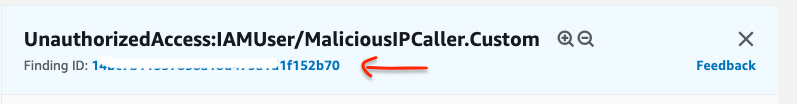
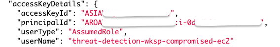

Agenda
- Compromised AWS IAM credentials ~ 25-40 mins
- Compromised EC2 instance ~ 25-40 mins
Module 3: Detect, Investigate & Respond
Unfortunately, due to a misconfiguration in your environment, an attacker may have been able to gain access to the web server. You are getting alerts from the security services you’ve put in place indicating malicious activity. These alerts include communication with known malicious IP addresses, account reconnaissance, changes to an Amazon S3 bucket configuration, and disabling security configurations. You must identify what activity the intruder may have performed and how they did it so you can block the intruder’s access, remediate the vulnerabilities, and restore the configuration to its proper state.
Part 1 - Compromised AWS IAM credentials
Detect and investigate
By now you’ve received email alerts from the security services you enabled. Now what? As part of your risk driven detection strategy your organization has decided to prioritize AWS IAM related findings.
-
Sort through your email alerts and identity an alert related to an AWS IAM principal
Amazon GuardDuty Finding: UnauthorizedAccess:IAMUser/MaliciousIPCaller.Custom
-
Copy the
<Access Key ID>from the e-mail alert.
Explore findings related to the access key (Amazon GuardDuty)
Now that you have a resource identifier to pivot from you can use Amazon GuardDuty to start doing an initial investigation into these findings.
-
Go to the Amazon GuardDuty console (us-west-2).
-
Click in the Add filter criteria box, select Access Key ID, and then paste in the
<Access Key ID>you copied from the e-mail, then select Apply.What findings do you see related to this Access Key ID? and what do they mean ?
-
Click on one of the UnauthorizedAccess:IAMUser/MaliciousIPCaller.Custom findings to see the details. This finding indicates a API call was invoked from an IP on a custom malicous IP caller list.
Looking at the finding details, can you identify what API calls were made?
-
Under Resources affected section in the finding details, you will be able to identify the instance ID of the EC2 instance to whom these credentials belonged to. It starts with ‘i’, such as i-08fa26ffb15a66f5a. Copy the instance ID as we will need it for later investigations to identify how credentails were compromised in the first place.
The credentials belong to the role that is assigned to the EC2 instance
-
Now, lets identify which role the access key belongs to. Examine the finding JSON by clicking on the Finding ID hyperlink.

Scroll untill you find the accessKeyDetails section you can see that the access key referenced in this finding is from an IAM assumed role, which means the Access Key credentials used to invoke these API calls belong to a IAM Role. Copy the name of the role, we will need it for remediation purposes.

Looking through other GuardDuty findings with a similar investigation mind set, what other infomration would you want to glean?
Respond
Now that you have identified that a temporary security credential from an IAM role for EC2 is being used by an attacker, the decision has been made to rotate the credential immediately to prevent any further misuse or potential privilege escalation.
Revoke the IAM role sessions (IAM)
-
Browse to the AWS IAM console.
-
Click Roles and find the role name you identified in the previous section using the User Name you copied down earlier (this is the role attached to the compromised instance), and click on that Role Name.
-
Click on the Revoke sessions tab.
-
Click on Revoke active sessions.
-
Click the acknowledgement check box and then click Revoke active sessions.
What is the mechanism that is put in place by this step to actually prevent the use of the temporary security credentials issued by this role?
Restart the EC2 instance to rotate the access keys (EC2)
All active credentials for the compromised IAM role have been invalidated. This means the attacker can no longer use those access keys, but it also means that any applications that use this role can't as well. You knew this going in but decided it was necessary due to the high risk of a compromised IAM access key. In order to ensure the availability of your application you need to refresh the access keys on the instance by stopping and starting the instance. A simple reboot will not change the keys. If you waited, the temporary security credential on the instance would be refreshed but this procedure will speed things up. Since you are using AWS Systems Manager for administration on your EC2 instances you can use it to query the metadata to validate that the access keys were rotated after the instance restart.
-
In the EC2 console Stop the Instance named threat-detection-wksp: Compromised Instance.
Check the box next to the instance, select the Actions menu, Instance State, Stop, confirm by pressing Yes, Stop
-
Wait for the Instance State to say stopped under Instance State (you may need to refresh the EC2 console) and then Start the instance.
You will need to wait until all Status Checks have passed before continuing.
Verify the access keys have been rotated (Systems Manager)
-
Go to AWS Systems Manager console and click on Session Manager on the left navigation and then click Start Session.
You should see an instance named threat-detection-wksp: Compromised Instance with a Instance state of running.
-
To see the credentials currently active on the instance, click on the radio button next to threat-detection-wksp: Compromised Instance and click Start Session.
-
Run the following command in the shell and compare the access key ID to the one found in the email alerts to ensure it has changed:
curl http://169.254.169.254/latest/meta-data/iam/security-credentials/threat-detection-wksp-compromised-ec2
Why would this scenario be a good use case for auto-scaling groups?
You can also connect to the EC2 instance with Sessions Manager using the Connect button on the top right of EC2 console.
At this point you've successfully revoked all the active sessions from AWS IAM role and rotated the temporary security credentials on the EC2 instance.
Part 2 - Compromised EC2 instance
Detect and investigate
Now that you've addressed the compromised IAM credential you need focus in on how the attacker was able to compromise the EC2 instance. It's this compromise which allowed them to query the instance metadata and steal the credentials.
Explore findings related to the instance ID (AWS Security Hub)
When investigating the compromised IAM credential you discovered that it was from an IAM role for EC2 and identified the EC2 instance ID from the principal ID of the finding. Using the instance ID (that you previously copied, it starts with an ‘i’, such as i-08fa26ffb15a66f5a) you can use AWS Security Hub to start investigating the findings. To start, you are going to research the GuardDuty findings related to the EC2 instance.
- Go to the AWS Security Hub console.
-
The link should take you to the Findings section (if not, click on Findings in the navigation on the left).
-
Add a filter by clicking in the Add filter box and scrolling down to Product Name, and paste in the word
GuardDuty. -
Use your browser's find function Control-F and paste in the
<Instance ID>you copied earlier. -
Click on one of the findings associated with this instance ID, a new panel will open, expand the Resources section.
-
Now look for the ARN, it will look something like this
arn:aws:ec2:us-west-2:166199753942:instance/i-0efc5172a5d7ecc6b -
Lets add this ARN as another filter by clicking on the magnifying glass.

Anytime you see a magnifying glass in GuardDuty or SecurityHub, you can use it as a quick way to add that attribute as a filter.
What GuardDuty findings do you see related to this instance ID?
-
One of the findings should indicate that the EC2 instance is communicating with an IP address on a threat list (disallowed IP) which adds further evidence to the conclusion that the instance has been compromised. Another finding should indicate that a system at a particular IP address is performing an SSH brute force attack against the instance you are investigating. You now need to investigate if the SSH brute force attack was successful and if that is what allowed the attacker to gain access to the instance.
Determine if ssh password authentication is enabled on the EC2 instance (AWS Security Hub)
Automated responses to threats can do many things. For example, you could have an trigger that helps gather information about the threat that could then be used in the investigation by the security team. With that option in mind, we have a CloudWatch event rule in place that will trigger an Amazon Inspector scan of an EC2 instance when GuardDuty detects a particular attack. We will use AWS Security Hub to view the findings from Inspector. We want to determine if the SSH configuration adheres to best practices.
- Open a fresh AWS Security Hub findings page in the console.(We will be filtering only based on Inspector findings in this section.)
- The link should take you to the Findings section (if not, click on Findings in the navigation on the left).
- Add a filter by clicking in the Add filter box and scrolling down to Product Name, and paste in the word
Inspector. - Use your browser's find function Control-F and paste in
password authentication over SSH - The finding may not be on the first page of findings, use the
>to move to the next page.
- Add a filter by clicking in the Add filter box and scrolling down to Product Name, and paste in the word
Click on the finding regarding SSH and password authentication for the instance that experienced the SSH brute force attack and review.
If you do not see any findings after a while, there may have been an issue with your Inspector agent. Go to the Inspector console, click on Assessment Templates, check the template that starts with threat-detection-wksp, and click Run. Please allow 15 minutes for the scan to complete. You can also look in Assessment runs and check the status. Feel free to continue through this module and check the results later on.
After review you should see that password authentication over SSH is configured on the instance. In addition, if you examine some of the other Inspector findings you will see that there are no password complexity restrictions. This means the instance is more susceptible to an SSH brute force attack.
Determine if the attacker was able to login to the EC2 instance (CloudWatch logs)
Now that we know that the instance was more susceptible to an SSH brute force attack, let’s look at the CloudWatch logs and create a metric to see if there were any successful SSH logins (to finally answer the question of whether the SSH brute force attack was successful.) Your corporate policy is to send security certain logs from EC2 instances to CloudWatch.
- Go to CloudWatch logs.
- Click on the log group /threat-detection-wksp/var/log/secure
- If you have multiple log streams, filter using the Instance ID you copied earlier and click on the stream.
-
Within the Filter Events text box put the following Filter Pattern:
[Mon, day, timestamp, ip, id, msg1= Invalid, msg2 = user, ...]Do you see any failed (invalid user) attempts to log into the instance? Would that be consistent with an SSH brute force attack?
-
Now replace the Filter with one for successful attempts:
[Mon, day, timestamp, ip, id, msg1= Accepted, msg2 = password, ...]Do you see any successful attempts to log into the instance? Which linux user was compromised?
Respond
Modify the EC2 security group (EC2)
The active session from the attacker was automatically stopped by an update to the NACL on the subnet where the instance resides. This was done by a CloudWatch event rule trigger that is invoked based on certain GuardDuty findings.
- Look through the Cloudwatch Event Console to identify how the automation was triggered.
-
Look through the Lambda Functions .
How would you modify these to suit your own environment.
-
Confirm NACL was updated with the IP address of the host that performed the SSH Bruteforce in the NACL Console in VPC. The threat-detection-wksp-compromised should have IP address of the malicious host denied.
This attack was successfull because SSH was enabled on the instance. You've decided that all administration on EC2 Instances will be done through AWS Systems Manager so you no longer need administrative ports open so a good next step would be to modify the security group associated with the EC2 instance to prevent the attacker or anyone else from connecting.
-
Go to the Amazon EC2 Console.
-
Find the running instances with the name threat-detection-wksp: Compromised Instance.
-
Under the Description tab, click on the Security Group for the compromised instance.
-
View the rules under the Inbound tab.
-
Click Edit and delete the inbound SSH rule.
The SSM Agent was installed on your EC2 Instance during the initial configuration.
-
Click Save
Congratulations! You have successfully remediated the incident and further hardened your environment. This is obviously a simulation and we can not cover every aspect of the response function in the short time allotted but hopefully this gave you an idea of the capabilities available on AWS to detect, investigate and respond to threats and attacks.
Here is a diagram of the attack you just investigated. Numbers 1 & 2 show the SSH brute force attack and successful SSH login. Number 3 shows the S3 bucket changes the attacker made. Number 4 shows the API calls the attacker made with the IAM temporary credentials stolen from the compromised EC2 instance.

If you are going through this workshop in a classroom setting then the instructor should start the module 4 presentation soon.